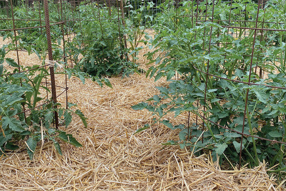
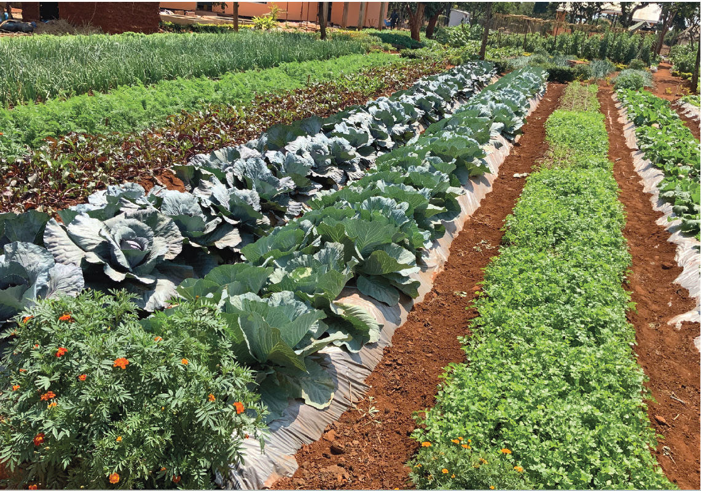
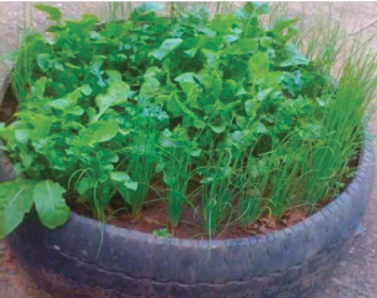
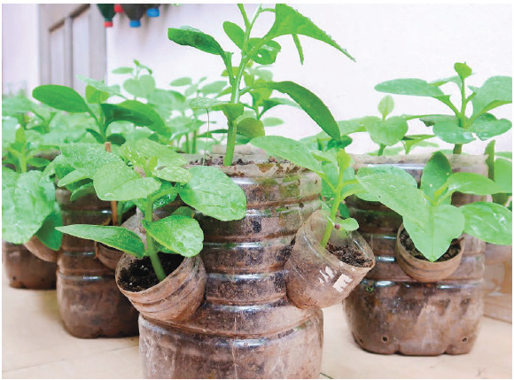
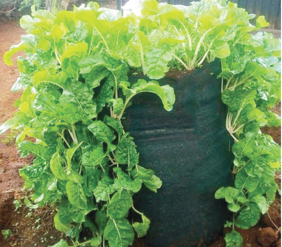
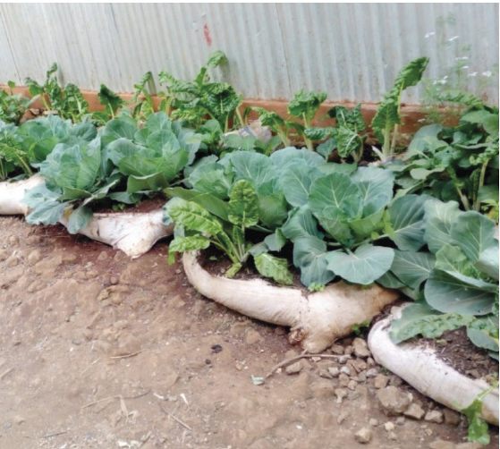

Agriculture for Secondary Schools Student’s Book Form One

Figure 3.73 (a): Horticultural farming in conventional seedbeds with grass mulch

Figure 3.73 (b): Horticultural farming in conventional seedbeds with plastic mulch

Figure 3.74 (a): Gardening in used tyre

Figure 3. 74 (b): Gardening in used bottles

Figure 3. 74 (c): Gardening in used sack

Figure 3. 74 (d): Gardening in used bags